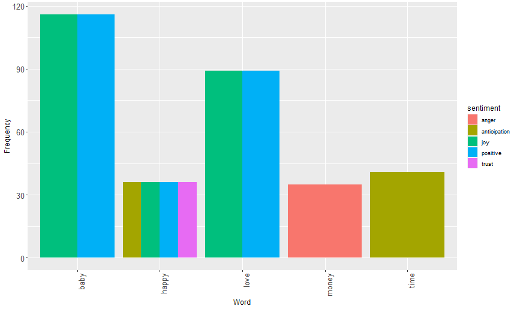
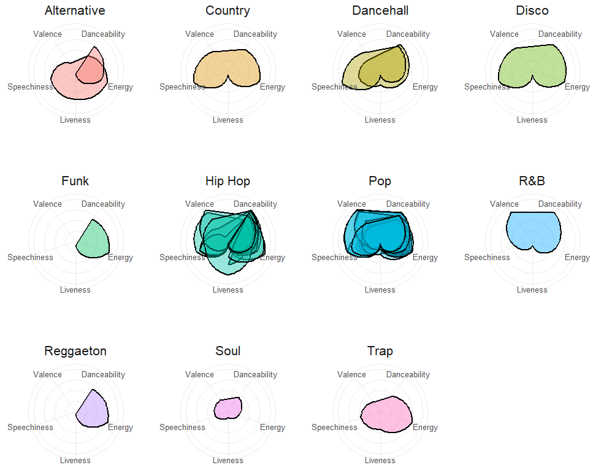
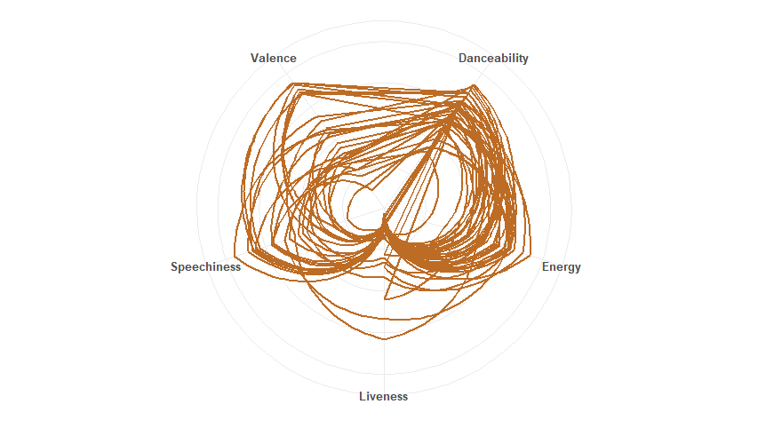
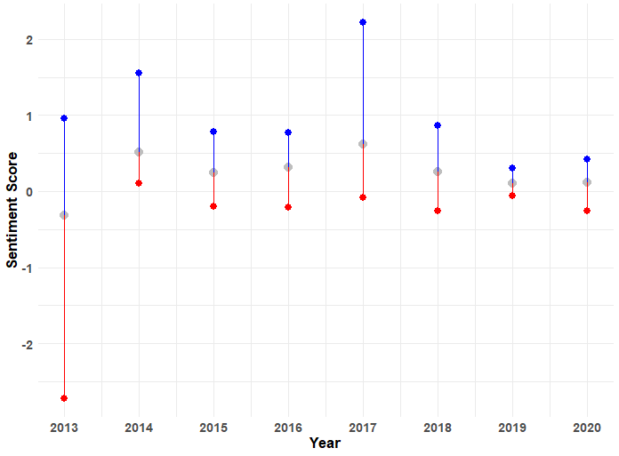

Welcome to Generation Alpha, a time when individuals born from the mid-2010s onwards are witnessing and influencing significant shifts in society. From growing up in a digital-first world to the increasing integration of artificial intelligence into everyday life, from the emphasis on early childhood education to the evolving landscape of family dynamics, these years are marked by transformative social, cultural, and technological developments that are shaping the fabric of an era.
During the Generation Alpha era, these were the most popular music genres...
| Genre | Count |
|---|---|
| Alternative | 2 |
| Dancehall | 2 |
| Disco | 1 |
| Funk | 1 |
| Hip Hop | 12 |
| Pop | 17 |
| R&B | 1 |
| Reggaeton | 1 |
| Soul | 1 |
| Trap | 1 |
From these top words and their associated emotions, we can glean insights into prevalent themes and sentiments that reverberated throughout Generation Alpha, reflecting the cultural, social, and emotional landscape of this era. Notably, the top two emotions, Joy and Positivity, wielded influence over significant events during this time, including the rise of social media platforms as hubs of creativity and connection, the global push for environmental sustainability driven by youth activism, the advancements in technology that have reshaped communication and entertainment, and the growing emphasis on diversity and inclusion in various aspects of society.
Each generation exhibits a diverse array of music genres, each with distinct characteristics such as valence, danceability, speechiness, energy, and liveness. These traits offer insight into the unique sound and feel of the music that defined each era
The Generation Alpha era, epitomized by its music genres, exhibits a consistent trend characterized by high valence, danceability, speechiness, and energy, with less emphasis on liveness.
Analyzing the sentiment scores of Generation Alpha throughout the years offers insights into emotional trends, focusing on their minimum, maximum, and average ranges. For example, the sentiment score hit its lowest point in 2013, a year marked by societal unrest and geopolitical tensions, including various conflicts and natural disasters, which stirred feelings of fear and uncertainty among many in Generation Alpha. Conversely, the sentiment score peaked in 2017, a time of relative stability and optimism, characterized by technological advancement, global connectivity, and a growing awareness of social and environmental issues, all contributing to a sense of hope and positivity among Generation Alpha.
Within Generation Alpha Generation, the top three songs of the era with the highest positive sentiment scores are...
| Song | Artist | Year Released | Sentiment Score |
|---|---|---|---|
| Shape of You | Ed Sheeran | 2017 | 2.21 |
| Happy | Pharrell Williams | 2014 | 1.55 |
| Radioactive | Imagine Dragons | 2013 | 0.96 |
Within the Generation Alpha Generation, the top three songs of the era with lowest negative sentiment scores are...
| Song | Artist | Year Released | Sentiment Score |
|---|---|---|---|
| Harlem Shake | Baauer | 2013 | -2.72 |
| God's Plan | Drake | 2018 | -0.25 |
| The Box | Roddy Rixh | 2020 | -0.25 |